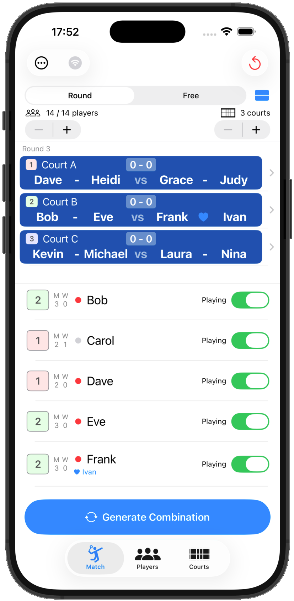
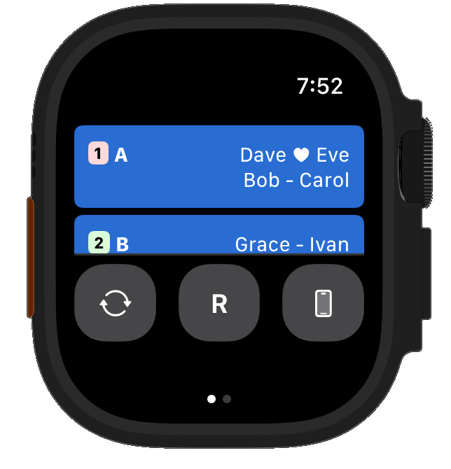
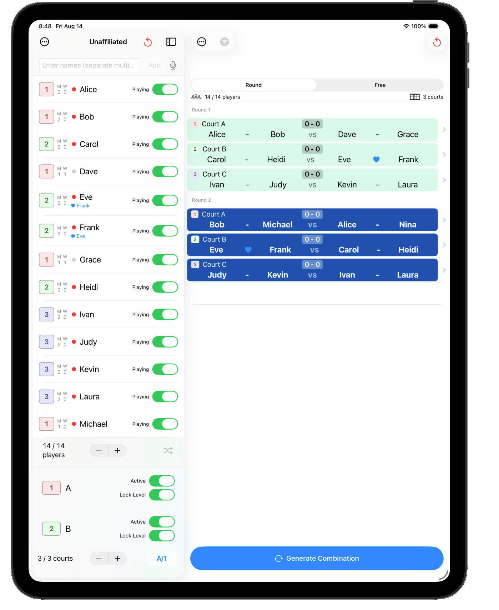

くみあぷ（PairGen）
v1.23.0
⚠️ This help is available in Japanese only. Please use your browser's auto-translate feature.
PairGen はバドミントンなどのダブルス競技向けに、組み合わせを自動生成する iOS アプリです（Android 版も公開中）。参加人数とコート数を設定するだけで、重複を最小限に抑えた組み合わせをすぐに生成できます。

iPhone

Apple Watch

iPad
使い方動画
主な機能
「くみあぷ」は、バドミントン・テニスのダブルス練習会やサークル・部活動の運営を手軽にする、組み合わせ自動生成＆スコア管理アプリです。参加人数とコート数を入力するだけで、公平な対戦表・コート分けを瞬時に作成できます。
組み合わせ・対戦表を自動生成
参加人数とコート数を入力するだけで、公平なローテーションでペアと対戦表を自動生成します。
- ラウンドモード：全員が均等に組み合わさるよう自動でローテーション管理
- フリーモード：コートが空き次第、待たずに次の組み合わせを生成
- レベル（強さ）設定でペア分けのバランスを調整
- 固定ペアの指定にも対応（カップルや実力差のあるペアを固定したい場合に）
- ミックスダブルス対応
スコア管理も1つのアプリで完結
組み合わせを生成したら、そのままスコアもつけられます。
- タップ操作だけの得点入力
- 元に戻す（アンドゥ）機能
- サーブ権・コートエンドの切り替え表示
- バドミントン公式ルールに準拠した自動勝敗判定
- ゲーム終了トグルとスコア履歴の記録
休憩管理・プレイヤー管理
- 出場中／休憩中のステータス管理で、急な欠席・追加にも柔軟に対応
- プレイヤー名による管理（番号を覚える必要なし）
- プレイヤー写真の登録
- メンバーの保存・グループ管理
- プレイヤー一覧に現在出場中かどうかを示す丸印を表示し、タップして「ピン留め」すると次の組み合わせで最優先に出場
コート管理
Apple Watch 連携
Apple Watch から組み合わせの確認や操作が可能です。
データの共有
- AirDrop でセッション（プレイヤー・組み合わせ）を他の端末に共有
- 試合結果をメールで送信
他の端末からも見られるサーバー機能（試験的）
試合タブからサーバーを起動すると、同じWi-Fiに接続した他の携帯・タブレットのWebブラウザから組み合わせ・プレイヤー一覧の閲覧や一部操作が可能です。会場の別の場所からでも進行状況を確認できます。
こんな場面で活躍します
- バドミントンサークル・部活動の練習試合の組み合わせ決め、対戦表作成
- 大会や練習会でのコート割り振り・休憩管理・スコア記録
- 急な欠席・追加にも柔軟に対応できるダブルスのローテーション管理
シンプルな操作で、毎回の「誰と誰が組むか」「どのコートで何点か」の管理から解放されます。
- ローカライズ対応（日本語・英語・韓国語・簡体字中国語・繁体字中国語）
- ヘルプページは日本語で提供しています。ブラウザの自動翻訳機能をご利用ください。
バージョン 1.23.0 更新内容
- ヘルプページのホームに使い方動画を追加。後にShorts版に差し替えて縦長レイアウトに対応し、プライバシー保護のためYouTube埋め込みをyoutube-nocookie.com経由に変更
- 一度組み合わせを生成すると、既存の組み合わせとの整合性を保つため、プレイヤー数・コート数を生成時点の人数・面数より減らせないように変更（試合タブ・プレイヤータブ・コートタブの
− ボタン、スワイプ削除に適用。試合結果をリセットすると再び自由に増減できます）
- iCloud同期したグループ名（All・Unaffiliated）が、保存時と異なる言語設定の端末で翻訳されずに表示されることがある不具合を修正
- プレイヤー一覧のピン留め表示を強調し、ピン留め中は出場状態を「休憩」に変更できないように変更（解除するには先にピンを外す必要があります）
- 固定ペアの配色、フリーモードのコート色、プレイヤー編集画面のレイアウトなど、見た目を細かく改善
- プレイヤー編集画面のゴミ箱アイコンで削除すると、一覧に戻らずそのまま次（末尾を削除した場合は前）のプレイヤーの編集画面に切り替わるように変更
フィードバック
バグ報告・ご意見は App Store のレビューまたは X（旧 Twitter）@ttrsato までお寄せください。